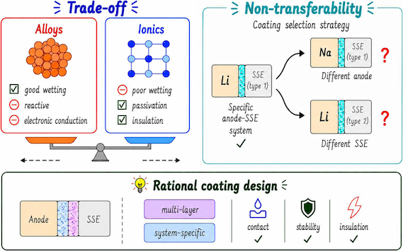

Jul 15, 2026
New Publication in J. Mater. Chem. A

We are pleased to announce that our latest research paper has been accepted for publication in J. Mater. Chem. A. All-solid-state alkali metal batteries utilizing lithium or sodium metal anodes provide a promising route toward high energy density. However, their practical implementation is often hindered by unfavorable interfacial energetics and dendrite growth at the contact between the anode and the solid-state electrolyte. Although artificial coatings offer a solution for stabilizing this interface, identifying optimal coating materials remains challenging due to the vast materials space and the absence of systematic evaluation frameworks. In this work, we develop a multi-property evaluation framework to systematically assess lithium- and sodium-based binary compounds as potential artificial coatings for all-solid-state batteries. By using first-principles calculations, we integrate interfacial energy, bulk reaction energy, and electronic band gaps into a unified property landscape. This approach captures essential performance trade-offs and establishes practical design guidelines for the selection and discovery of artificial coating materials in lithium- and sodium-based energy storage systems.
Title: Computational evaluation of artificial coating materials for improved interface stability in all-solid-state alkali metal batteries
Journal: J. Mater. Chem. A (online)
DOI: 10.1039/d6ta04307k